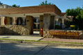
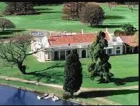
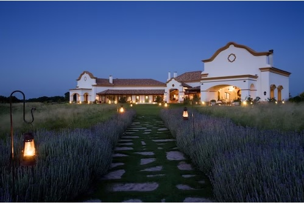
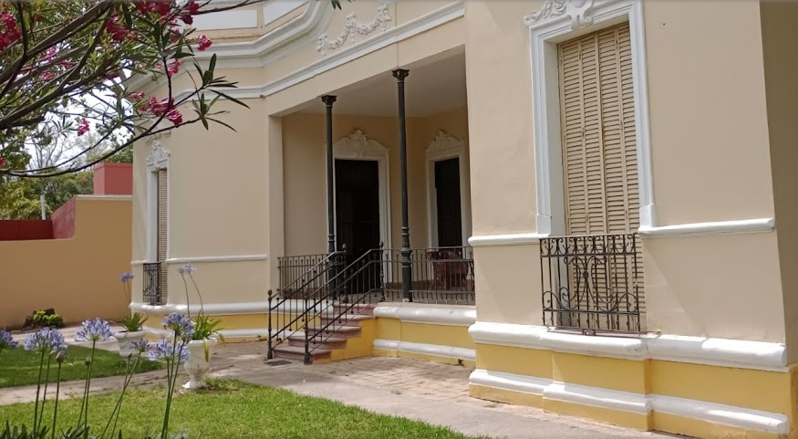
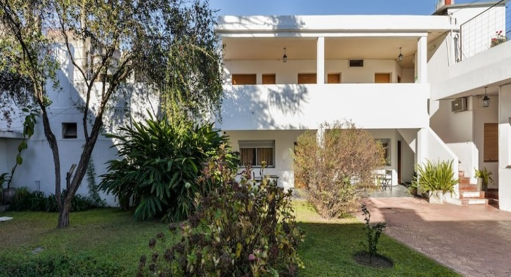
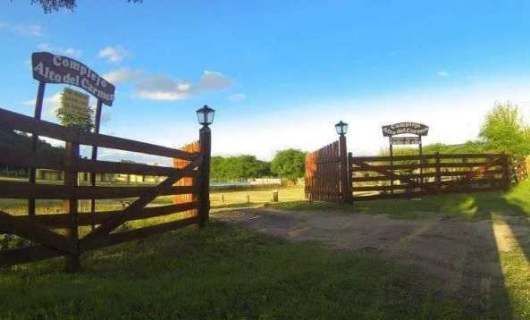

Hoteleria
Cordoba es una ciudad muy favorecida por su ubicacion en la que confluyen numerosos caminos convirtiendola en un centro de distribucion de bienes y personas en transito del resto de Argentina y paises limitrofes. Uno de sus atractivos mas grandes es la cercania con las Sierras lo que ofrece facilidad de acceso a los atractivos naturales que ofrece la provincia. Segun estadisticas Cordoba tiene la mayor concurrencia durante las epocas de Semana Santa, por su riquesa cultural
| Nombre | Destino Cercano | Pagina Oficial - Informacion | Ubicacion | |
|---|---|---|---|---|
| Hotel Mirasoles | Camino Brocheriano | Hace tu reserva | Como llegar |  |
| Hotel La Paz | Estancia Colonia Caroya | Hace tu reserva | Como llegar |  |
| El Colibri-Estancia de Charme | Estancia Jesus Maria | Hace tu reserva | Como llegar |  |
| Hotel Boutique | Estancia Santa Catalina | Hace tu reserva | Como llegar |  |
| Hotel Ritz | Estancia Alta Gracia | Hace tu reserva | Como llegar |  |
| Alto del Carmen Hotel de campo | Estancia La Candelaria | Hace tu reserva | Como llegar |  |
| NH Panorama | Manzana Jesuitica de la Ciudad de Cordoba | Hace tu reserva | Como llegar |